逻辑编辑器¶
基础¶
可视化编程是通过在Blender的节点编辑器创建逻辑节点树进行。这些节点可以无需任何编码也能显著的增强场景的功能性。
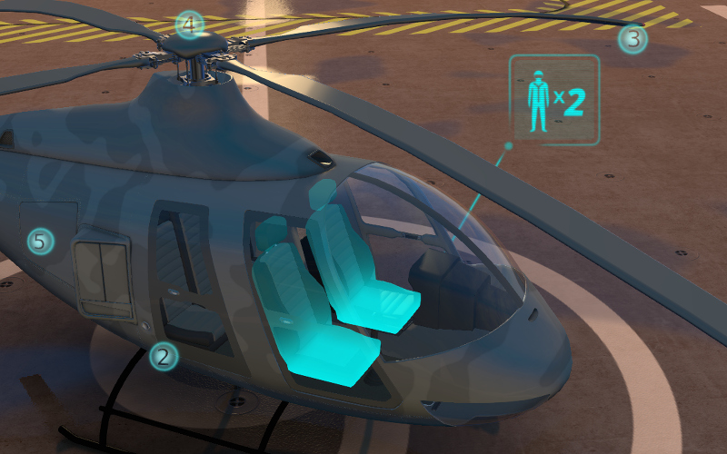要在给定场景激活逻辑，在 Scene 选项卡中设置 Logic Editor 属性并追加/选择活动节点树。

要编辑逻辑树需要到 节点Editor 区域并选择 Blend4Web Logic 树类型：

然后选择所需的节点树：

通过使用标准的Blender键盘快捷键 Shift+A 创建节点。
本身就是逻辑块的节点从只有一个输出没有输入的 Entry Point 节点开始。所有其他节点有输入和输出，并可以在逻辑树的任何地方插入。例外的是页面重定向节点，仅可以在末端节点树插入。有两个输出的节点允许分支，因此基于为此类节点指定条件可以在下一个层级做选择。
为实现复杂的逻辑有可以有数值或字符串值的变量。变量可以用于存储一些场景状态 (例如，这可以是动画播放计数器，角色的健康点等)。
逻辑编辑器使用示例：
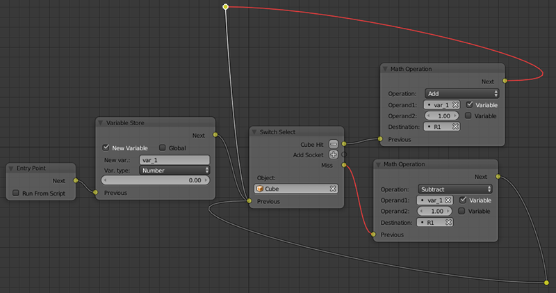下文介绍了所有可用的节点。
控制流¶
入口点¶
这是该脚本开始的地方。通过使用多个入口点您可以创建多线程应用程序。
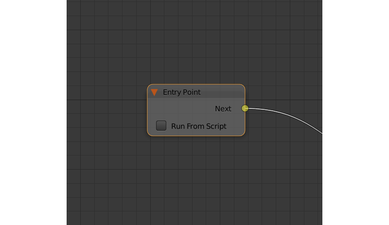输入参数¶
空
输出参数¶
- 下一个
- 下一个节点。
内部参数¶
- 从脚本运行
- 如果启用此参数，切入点可以通过API使用 run_entrypoint 方法触发。
Select¶
可用于跟踪物体列表中的任何物体的选择。

输入参数¶
- 上一个
- 前一个节点。
输出参数¶
- <object name> 命中
- This parameter will pass the control to the next node if the user selects (with a mouse or by touch) an object mentioned in the parameter’s name. The
Selectnode has one such parameter by default, but you can add new ones and remove existing ones (the node can even have no such parameters). - 未击中
- This parameter will pass the control to the next node when the user selects any object with the
Selectableproperty enabled (or used by anotherSelectnode), but not specified in theSelectnode.
内部参数¶
- 物体
- 用户可以选择的物体之一。当您创建或删除命中参数时，这些参数会自动创建和删除
Hit参数。这样的参数的数量总是等于Hit参数的数目。 - Variable
- If this parameter is enabled, you can specify an object variable in the corresponding
Objectfield. - 目标
- Sets a variable that will be used to store a selected object after an event of selection.
Branch¶
如果满足一定的条件转到指定的节点。参数（操作数）也可以是使用相应的开关激活的变量。
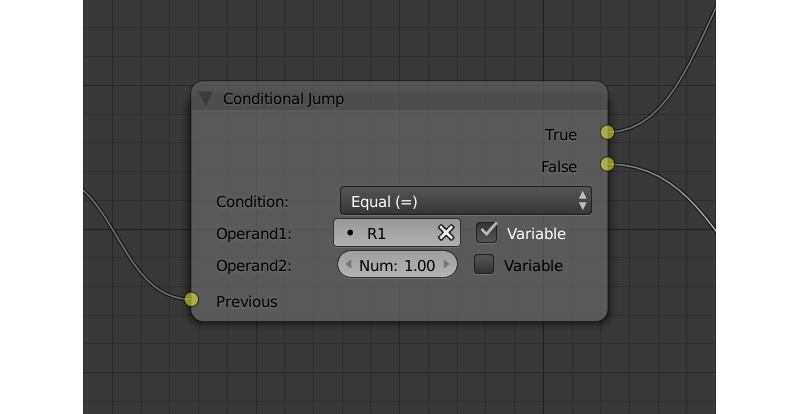输入参数¶
- 上一个
- 前一个节点。
输出参数¶
- 真
- 条件为真。
- 假
- 条件是假的。
内部参数¶
- 条件
逻辑条件。可以有以下几种类型：
- Equal (=) - 第一个操作数等于第二个。
- Not Equal (!=) - 第一个操作数不等于第二个。
- Less Than (<) - 第一个操作数小于第二个。
- Greater Than (>) - 第一个操作数大于第二个。
- Less Than Or Equal (<=) - 第一个操作数小于或等于第二。
- Greater Than Or Equal (=>) - 第一个操作数是大于或等于第二个。
- Operand1
- 逻辑条件的第一个操作数。包含数值或字符串（如果
String Operators参数已启用）。可以在节点中指定，也可以是指向其中一个变量的链接（如果右侧的Variable参数被启用）。 - Operand2
- 逻辑条件的第二个操作数。和第一个以同样的方式工作。
- Operand's Type
- The type of the operands. Available values are
Number(the default option),StringandObject.
Switch¶
This node compares several variables with a given value and executes a conditional jump depending on the outcome.

输入参数¶
- 上一个
- 前一个节点。
输出参数¶
- <variable name>
- One of the variables used for comparison. If the value of the variable specified by this parameter is equal to the value of the
Variableparameter, control is passed to the node connected to this output. TheSwitchnode has one such parameter by default, but you can add new ones and remove existing ones (the node can even have no such parameters). - Default
- This output will pass control to the next node in case none of the values are equal to that of the variable set by the
Variableparameter.
内部参数¶
- Variable
- Specifies a variable used for comparison.
JS 回调¶
可以用来调用您的 Blend4Web 应用程序中定义的自定义 JavaScript 回调。
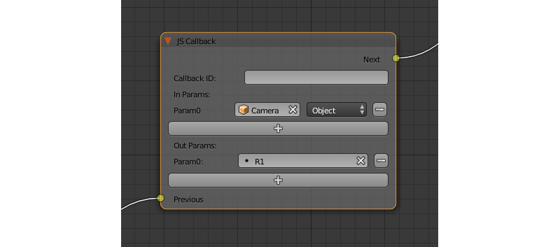输入参数¶
- 上一个
- 前一个节点。
输出参数¶
- 下一个
- 下一个节点。
内部参数¶
- 回调 ID
一个 JavaScript 函数将被节点调用的 ID。
This value can be set directly or via a variable (if the
Variableparameter is enabled).- 输入参数
输入函数的参数的列表。每个参数可以是变量或到场景物体的链接。可以调整输入参数的数目。默认情况下，此列表是空的。
输入的参数传递给回调函数作为数组来作为第一个函数的参数。
- 参数 <param_number>
- 指定输入的参数。此参数可以是一个变量 (如默认的
R1) 或链接到一个场景物体，根据Type参数 （这些参数每一个总是有相应的Type参数） 的值。 - 类型
- 相应的输入参数的类型。它可以有两个值之一:
Variable（在这种情况下，其中一个变量将用作参数） 和Object（链接至一个场景物体）。 - 输出参数
输出参数的列表。默认情况下为空。可以调整输出参数的数目。
一个数组，包含输出参数作为回调函数的第二个参数。
- 参数 <param_number>
- 指定变量之一作为输出参数。默认情况下，使用
R1变量。
Define Function¶
This node can be used to combine several logic nodes into a function - a subroutine that can be accessed from the main logic setup. This node always serves as a starting point of a separate node tree and thus feature no input parameters.
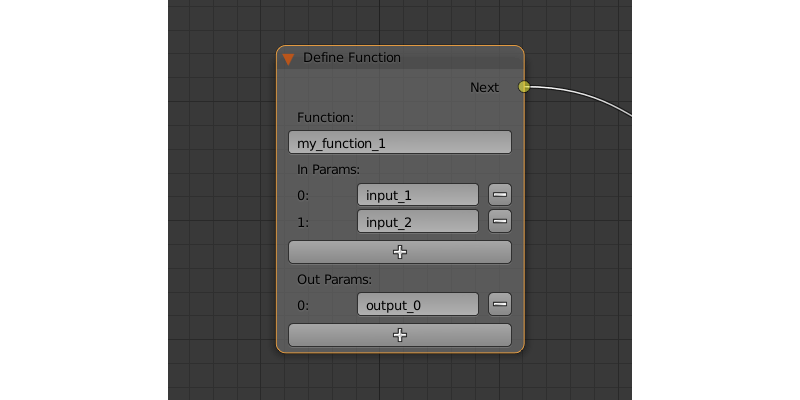输入参数¶
空
输出参数¶
- 下一个
- 下一个节点。
内部参数¶
- Function
- The name of the function.
- 输入参数
- The list of the function's input parameters. This list is empty by default, but you can add and remove variables using
+and-buttons. Each variable can also be named. - 输出参数
- The list of the function's output parameters. Works in the same way as the
In Paramslist.
Call Function¶
This node can be used to call a function defined by a Define Function node.

输入参数¶
- 上一个
- 前一个节点。
输出参数¶
- 下一个
- 下一个节点。
内部参数¶
- NodeTree
- The name of the node tree from which the function is called.
- Function
- The name of the function.
- 输入参数
- The list of the variables to set the input parameters of the function specified by the
Functionparameter. - 输出参数
- The list of the variables to store the output parameters of the function specified by the
Functionparameter.
动画¶
Play Timeline¶
This node can be used to control NLA animations. The Play Timeline node plays NLA fragment starting with a frame specified by the marker. Animation plays until next marker is encountered, or to the end of the scene’s timeline. After that, control passes on to the next node.

输入参数¶
- 上一个
- 前一个节点。
输出参数¶
- 下一个
- 下一个节点。
内部参数¶
- 起始标记
First frame of the animation.
注解
If this parameter is not specified, the animation plays from the current frame, i.e. if animation hasn't been played yet, playback will start from the first frame of the timeline. If playback has been stopped with the
Stop Timelinenode and then started again, it will continue from the last played frame.- 结束标记
Last frame of the animation.
注解
If this parameter is not specified, an animation plays to the next marker (or to the end of the timeline, if there isn't any).
- 不要等
- If this parameter is enabled, the
Play Timelinenode will pass the control to the next node on starting the animation playback. If it isn’t, the control will be passed to the next node only after playback is finished.
Stop Timeline¶
Stops the playback of the NLA animation started by the Play Animation node.

输入参数¶
- 上一个
- 前一个节点。
输出参数¶
- 下一个
- 下一个节点。
内部参数¶
- 设置第一帧
- If this parameter is enabled, the timeline will be reset to the first frame after the animation playback stops. Otherwise, the timeline will be set to the frame specified by the
End Markerparameter of thePlay Timelinenode.
播放动画¶
This node can be used to play object animation.
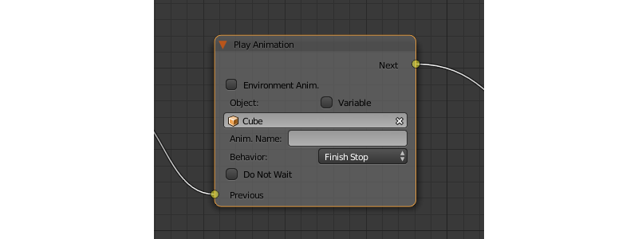An animation can be one of the following types:
常规动作：

着色器动作：

粒子系统：

输入参数¶
- 上一个
- 前一个节点。
输出参数¶
- 下一个
- 下一个节点。
内部参数¶
- Environment Anim.
- If this parameter is enabled, animation of the scene environment (a
Worldobject) will be played. - World
- Specifies the
Worldobject, animation of which will be played. This parameter is only available if theEnvironment Anim.parameter is enabled. - 物体
- 物体，动画，其中将播放的名称。
- Variable
- If this parameter is enabled, an Object-type variable can be set in the
Objectfield. - 动画名称
- 要播放动画的名字。如果未指定，则整个时间轴将播放。
- 行为
指定动画行为。可以有以下值之一：
- 完成停止 - 动画将播放一次。
- 完成重置 - 动画将被播放一次，则该物体将返回到起点。
- 循环 - 动画将被反复播放直到它被
Stop Animation节点停止掉。
- 不要等
- 如果该参数被启用，
Play Animation节点将控制传递到下一个节点上启动动画播放。如果不是，控制将被传递到播放完成后才会进入下一个节点。
停止动画¶
可以用来停止物体的动画。

输入参数¶
- 上一个
- 前一个节点。
输出参数¶
- 下一个
- 下一个节点。
内部参数¶
- Environmental Anim.
- If this parameter is turned on, animation of the scene environment (a
Worldobject) will be stopped. - World
- Specifies the
Worldobject, animation of which will be stopped. This parameter is only available if theEnvironment Anim.parameter is enabled. - 物体
- Name of the object, animation of which will be stopped.
- Variable
- If this parameter is enabled, an Object-type variable can be set in the
Objectfield. - 设置第一帧
- 返回到第一帧的动画已经停止之后。
相机（Camera）¶
移动相机¶
可用于移动相机，包括其位置的平滑插补。

输入参数¶
- 上一个
- 前一个节点。
输出参数¶
- 下一个
- 下一个节点。
内部参数¶
- 相机
将摄像机移动。
This parameter can be set directly or using an Object-type variable (if the
Variableoption is enabled).- 位置
相机将移动的物体。相机的坐标跟运动结束后的物体是相同的。
This parameter can be set directly or using an Object-type variable (if the
Variableoption is enabled).- 目标
相机将在指向该物体的方向移动。
This parameter can be set directly or using an Object-type variable (if the
Variableoption is enabled).- 持续
- 相机被转移到一个新的位置将花费的时间（秒）。默认设置为零（在这种情况下，相机实际上并没有移动，它只是改变了它的位置）。它可以手动指定或作为一个变量的一个链接（如果是启用了变量的参数）。
设置相机移动方式¶
可以用来改变所选摄像机的移动方式。

输入参数¶
- 上一个
- 前一个节点。
输出参数¶
- 下一个
- 下一个节点。
内部参数¶
- 相机
此参数指定的摄像机到的变化将被应用。
This parameter can be set directly or using an Object-type variable (if the
Variableoption is enabled).- 新相机移动方式
- 此参数指定相机将使用新的方式。四个选项可用：
Hover,Eye,TargetandStatic.
以下选项只是 New Camera Move Style 参数未设置为 Static 时才可用︰
- 变换
- 设置相机变换速度。默认情况下，此参数设置为 1.0。
- 旋转
- 设置摄像机的旋转速度。默认情况下，此参数设置为 1.0。
- 放大
- 设置相机的变焦速度。默认值为 0.10。只有
New Camera Move Style参数设置为Hover或Target时才可用。
以下参数用于指定目标或相机的轴心点和仅在 New Camera Move Style 参数设置为 Hover 或者 Target 时才可用︰
- 使用物体
- 此参数启用和禁用使用场景物体作为相机的目标或轴心点 （取决于相机类型）。如果它激活，一个文本字段将显示在指定的物体。此参数默认被禁用的。
如果``使用物体``参数被禁用，以下三个选项可用：
- x
- 相机的目标/轴心点的
X分量。 - y
- 相机的目标/轴心点的
Y分量。 - z
- 相机的目标/轴心点的
Z分量。
设置相机限制¶
此节点可以用于设置选定相机的限制。节点列出了所有可用的限制，但只有那些与照相机类型兼容的限制可以被应用。
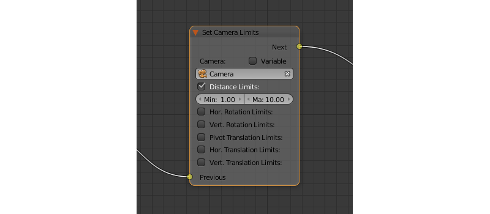输入参数¶
- 上一个
- 前一个节点。
输出参数¶
- 下一个
- 下一个节点。
内部参数¶
- 相机
此参数指定将应用限制的摄像机。
This parameter can be set directly or using an Object-type variable (if the
Variableoption is enabled).- Distance Limits
- 设置
距离限制参数用于 目标 和 悬停 照相机类型。 - Hor. Rotation Limits
- 设置
水平旋转限制参数用于于 目标 和 眼 照相机类型。 - Vert. Rotation Limits
- 设置
垂直旋转限制参数用于于 目标, 悬停 和 眼 照相机类型。 - Pivot Translation Limits
- 设置
轴点移动限制参数用于 目标 相机类型。 - Hor. Translation Limits
- 设置
水平移动限制参数用于 悬停 相机类型。 - Vert. Translation Limits
- 设置
垂直移动限制参数用于 悬停 相机类型。
物体¶
显示物体¶
可用于显示3D物体。

输入参数¶
- 上一个
- 前一个节点。
输出参数¶
- 下一个
- 下一个节点。
内部参数¶
- 物体
- 显示一个物体。
- Variable
- If this parameter is enabled, an Object-type variable can be set in the
Objectfield. - 处理子物体
- 如果启用此参数，则将显示子物体。
隐藏物体¶
可以用来隐藏三维物体。
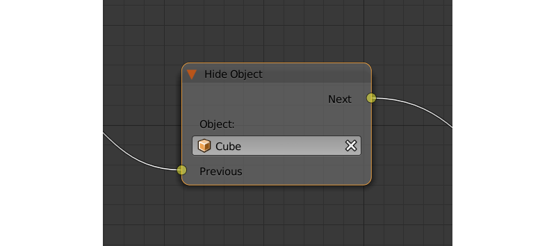输入参数¶
- 上一个
- 前一个节点。
输出参数¶
- 下一个
- 下一个节点。
内部参数¶
- 物体
- 一个物体隐藏。
- Variable
- If this parameter is enabled, an Object-type variable can be set in the
Objectfield. - 处理子物体
- 如果启用此参数，则将隐藏子物体。
变换物体¶
可以用来改变物体的位置，大小和旋转角度。
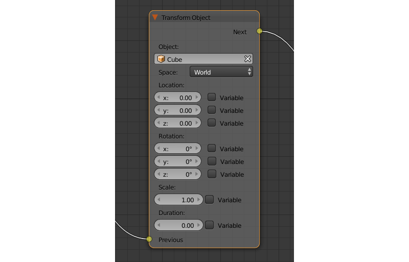输入参数¶
- 上一个
- 前一个节点。
输出参数¶
- 下一个
- 下一个节点。
内部参数¶
- 物体
- 需要进行变换的物体。
- Variable
- If this parameter is enabled, an Object-type variable can be set in the
Objectfield. - 空间
此参数定义将用于转换的物体的坐标空间。它可以具有下列值之一 ︰
World- 全局坐标空间。Parent- 物体在Object参数中指定的父物体的本地坐标系统。父物体的原点作为坐标的中心，而它的旋转角度定义坐标轴的方向。Local-所选物体的局部坐标空间。类似于Parent坐标空间，但在这种情况下，物体本身的起始点作为坐标原点。
默认设置为
World。- 位置
- 如何沿着
X,Y和Z轴移动物体。默认情况下，所有三个参数设置为零。值可以指定节点本身或通过变量 （如果启用了变量选项）。 - 旋转
- 围绕
X,Y和Z轴旋转物体。所有的三个值都设置为零，默认情况。可以指定节点中直接或通过变量 （如果启用了变量选项）。 - 缩放
- 物体的大小。可以指定直接或通过一个变量 （如果启用了变量参数）。默认设置为 1。
- 持续
- 变换需要的时间 （以秒为单位）。它可以指定直接或用变量 （若要做到这一点，变量参数应启用）。设置为零，默认情况。
移动到¶
可用于移动物体。
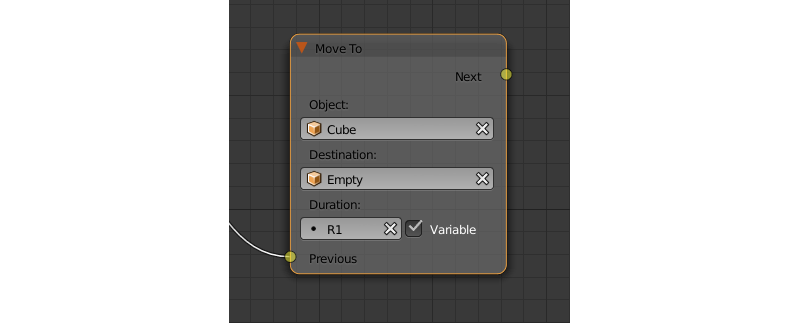输入参数¶
- 上一个
- 前一个节点。
输出参数¶
- 下一个
- 下一个节点。
内部参数¶
- 物体
- An object that you need to move. It can be set directly or using an Object-type variable (if the
Variableoption is enabled) - 目标
一个目标（另一个物体或光源，摄像机或其他东西）选择的物体会移动。物体的坐标和目标的运动完成后的将是相同的。
This parameter can be set directly or using an Object-type variable (if the
Variableoption is enabled).- 持续
- 该物体将移到新位置花的时间 （以秒为单位）。默认情况下，此参数设置为零 （和在这种情况下，物体实际上并不移动，它只是改变了其在一个时刻的位置）。它可以设置手动或用变量 （仅当启用了变量参数可用）。
应用形状关键¶
设置形状关键因素。

输入参数¶
- 上一个
- 前一个节点。
输出参数¶
- 下一个
- 下一个节点。
内部参数¶
- 物体
- 待转化需要的物体。
- 形变关键帧
- 形状将被应用到物体的密钥。
- 值
- How much the shape key will influence the object. This value can be set directly in the node or using a variable (if the
Variableparameter is set). The value should be between 0 and 1.
轮廓¶
控制物体概述效果。

输入参数¶
- 上一个
- 前一个节点。
输出参数¶
- 下一个
- 下一个节点。
内部参数¶
- 物体
- 的轮廓效果的任何更改将只适用于由该参数指定的物体。
- Variable
- If this parameter is enabled, an Object-type variable can be set in the
Objectfield. - 操作
指定将完成到该物体的轮廓的操作。这个参数可以具有以下值之一：
- PLAY 启用轮廓动画
- 停止 禁用它
- INTENSITY 可以用来设置该物体的轮廓强度
- 强度
- 轮廓强度。如果
Operation参数设置为INTENSITY时此参数才是可用的。值可以设置手动或通过变量 （如果启用了变量参数）。

操作¶
变量存储¶
保存数字或字符串值的变量。
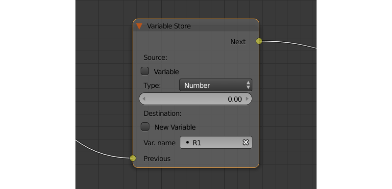输入参数¶
- 上一个
- 前一个节点。
输出参数¶
- 下一个
- 下一个节点。
内部参数¶
- 变量名称
- 变量的名称。可以从变量列表中选定或手动指定 (如果
New variable参数已启用)。 - 类型
- Variable’s type. This parameter can have one of the three values:
Number(for numerical variables),String(for string variables) orObject(for object variables). - 物体
- This parameter is used to specify the object that will be used as a variable. It is only available if the
Typeparameter is set toObject. - 新变量
- 如果启用此参数，则可以手动输入变量名称并不只是选择其中一个变量。这可以用于应用程序和服务器之间传输的数据。
- 全局
启用此参数可使变量成全局变量。仅当启用了
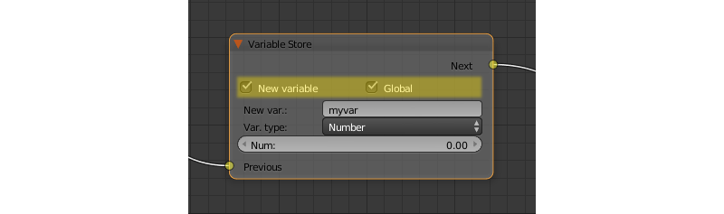New Variable参数可用。
数学运算¶
执行数学运算，并将结果存储在变量中。任何参数 （操作数） 可以是一个数值或变量。
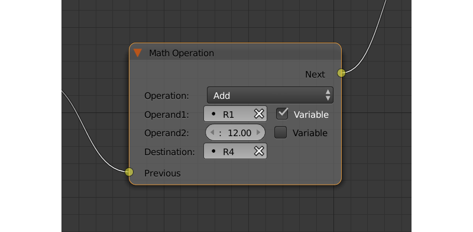输入参数¶
- 上一个
- 前一个节点。
输出参数¶
- 下一个
- 下一个节点。
内部参数¶
- 操作
数学运算。可以有以下几种类型：
- 随机 产生比第一操作数大比第二个小的随机值。
- 添加 量操作数相加。
- 乘 将操作数相乘。
- 减去 从所述第一个数中减去第二个操作数。
- 除数 由第二个把第一个操作数除。
- 正弦 返回第一个操作数所定义的角度 （以弧度为单位来衡量） 的正弦值。
- 余弦 返回第一个操作数所定义的角度 （以弧度为单位来衡量） 的余弦值
- 正切 返回第一个操作数所定义的角度 （以弧度为单位来衡量） 的正切值。
- 反正弦 返回第一个操作数的反正弦值。
- 反余弦 返回第一个操作数的反余弦值。
- 反正切 返回第一个操作数的反正切值。
- 对数 返回用第二个操作数用作基底的第一个操作数的对数值。
- 最小 返回一个较小的两个操作数。
- 最大 返回两个操作数的其中大的那个。
- 四舍五入 四舍五入第一个操作数。
- 求余 返回第一个数被第二个数相除后的余数。
- 绝对值 返回第一个操作数的绝对值。
- Operand1
- 对于第一个操作数。它可以在节点中指定或它可以链接到一个变量 （如果启用了变量参数）。
- Operand2
- 第二操作数。的工作方式与第一个同。
- 目标
- 该运算的结果将保存在此参数所指定的变量中。
字符串操作¶
可以用来执行一个包含两个字符串的操作，并将结果保存到一个变量。

输入参数¶
- 上一个
- 前一个节点。
输出参数¶
- 下一个
- 下一个节点。
内部参数¶
- 操作
您需要有两个字符串，其可具有以下值中的一个来执行操作：
- 加入 - 连接两个字符串合并为一个。
- 查找 - 如果第二个字符串在第一个里面出现就将在第一个里面出现的第二个的索引位置写入变量。如果没有匹配项，则将写入值为-1。应该指出的是，字符串的第一个符号具有索引为 0，不是 1。
- 替换 用第三个字符串替换第一个字符串中出现的第二个字符串。
- 拆分 用第二个字符串在第一个字符串中出现位置作为拆分标记将第一个字符串拆成两个
- 比较 比较两个字符串。对于此操作，您需要指定一个逻辑条件。如果满足此条件，值为 1 将被输出到
Destination变量，如果不是，零将被输出。
- 条件
- 要比较两个字符串的逻辑条件。只有
Operation参数设置为Compare，此参数才可用。 和Conditional Jump节点的Condition参数相同的工作。 - Operand1
- 第一个字符串。可以指定在该节点本身或与一个变量。
- Operand2
- 第二个字符串。的工作方式与第一个相同。
- 操作数3
- 只有
Operation参数设置为Replace，此参数才可用。可以用来指定第三个字符串，将替换在第一个中出现的第二个字符串。 - 目标
- 一个变量来保存操作的结果。
- Destination2
- 只有
Operation参数设置为Split，此参数才可用。指定的变量来保存第二个拆分 （第一半将被保存到Destination参数所指定的变量） 的字符串。
声音¶
网络¶
发送请求¶
将 HTTP GET 请求发送到指定的 URL 和保存响应字段变量。

输入参数¶
- 上一个
- 前一个节点。
输出参数¶
- 下一个
- 下一个节点。
内部参数¶
- 方法
请求方法。可以有两个值之一：
- GET 用来从服务器请求数据。
- POST 被用于将数据发送到服务器。
默认设置为
GET。- Url
- A web address to send request to. It can be defined directly or using a variable (if the
Variable URLoption is enabled). Set to “https://www.blend4web.com” by default. - 响应参数
- 指定要保存接收到来自服务器的数据的变量。
注解
从服务器收到的数据应该是JSON格式 ︰
{
"var0": 1,
"var1": 10,
"var2": 144
}
- Content-Type
- 表示信息内容的媒体类型。一个类型和子类型，例如包括：
text/plain。默认设置为Auto。可以用来重新分配HTTP请求的标题。 - Request Params
- 指定将发送到服务器的包含 JSON 物体的变量。
Method参数设置为Method时才可用。默认值为R1。
JSON¶
此节点可以用于编码和解码复杂的 JSON 物体。

输入参数¶
- 上一个
- 前一个节点。
输出参数¶
- 下一个
- 下一个节点。
内部参数¶
- JSON
- 链接到一个您需要进行解码或编码的 JSON 物体。默认设置为
R1。 - JSON 操作
- 需要对
JSON参数所指定的 JSON 物体执行的操作。可以有两个值之一:ENCODE对 JSON 物体进行编码 和PARSE进行解码。默认设置为ENCODE。 - Paths
- 一个JSON物体内部的变量的路径列表。路径是用来定义一个JSON物体的内部结构。路径应该包括几个标识符（用逗号分隔），作为一个JSON字段路径。如果路径的片段的名称仅由数字组成，则该名称将被解释为数组索引。路径的创建和删除跟变量是同时的（变量列表），和一个路径总是对应于一个变量。这个列表可以用来进行编码和解码的JSON物体。默认情况下，列表是空的。
- Variables
- 变量列表，将用于存储数据的解码或编码一个JSON物体（取决于
JSON Operation参数的值）。变量总是有类似var0,var1等的名字，他们的数量和名称可以调整。默认列表为空。
使用JSON逻辑节点编码JSON物体¶

在图片的逻辑节点设置在 R1 可 变编码以上JSON物体，并将其存储。这样的JSON物体如下：
{
"main":{
"part1":7,
"part2":12,
"part3":"abc"
}
}
使用JSON逻辑节点解码JSON物体¶

上图为逻辑节点的设置，从服务器获取JSON物体，并将其存储在 R1 变量，然后解码。这样的JSON物体如下：
{
"a": {
"b": 17,
"c": "abc"
}
}
这解码JSON物体的 JSON 逻辑节点 var0，var1 和 var2 三个变量命名的结果（你不必事先创建的变量）将包含JSON物体的各个部分。在这个例子中，var1 变量的值是17，则 var2 变量的值是 "abc"，而 var0 变量包含JSON物体的以下片段：
{
"b": 17,
"c": "abc"
}
页面参数¶
允许在一个给定的变量中存储任何 web 页参数。
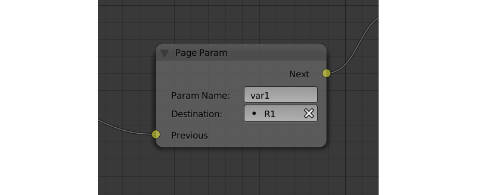输入参数¶
- 上一个
- 前一个节点。
输出参数¶
- 下一个
- 下一个节点。
内部参数¶
- 参数名称
网页参数的名称。
如果该字段中指定的参数在URL中显示，则其值将被保存到
Destination参数指定的变量中。- 目标
- 将用来保存参数的变量。
- Param type
- The type of the web page parameter. Available values are
Number,StringandObject. - Hash param
- If this option is enabled, the
Page Paramnode will process hash parameters; if it isn't, the node will process regular URL parameters.
页转到¶
可以用来浏览器重定向到另一页。此节点总是标记节点树的结束，并且没有任何输出参数。

输入参数¶
- 上一个
- 前一个节点。
输出参数¶
空
内部参数¶
- Url
- Web address of a page that will be opened. It can be defined manually or using a variable (if the
Variable URLparameter is enabled). Set to “https://www.blend4web.com” by default.
时间¶
日期及时间¶
此节点返回当前时间和日期。

输入参数¶
- 上一个
- 前一个节点。
输出参数¶
- 下一个
- 下一个节点。
内部参数¶
- 时间格式
此参数定义测量时间的格式。它可以设置为以下值之一：
- 世界标准时间
协调世界时
注解
该节点返回的协调世界时间是基于本地系统时间和时区。
- 本地
- 如果选择此值，则从本地系统时间检索时间。默认情况下选择此值。
时间和日期作为一组数字（当前年，月，日等）返回，其中每一个可以存储到特定变量中。这些数字包括：
- 年
- 本年度
- 月
- 本月
- 天
- 本日
- 小时
- 当前小时
- 分钟
- 当前分钟。
- 秒
- 当前的秒数。
获取时间线¶
此节点可以用于获取 NLA 动画或时间线的当前帧。

输入参数¶
- 上一个
- 前一个节点。
输出参数¶
- 下一个
- 下一个节点。
内部参数¶
- NLA 时间线
- 如果启用此参数，则该节点将返回当前动画的帧的 NLA。如果禁用了它，则该节点将返回当前帧的时间线。默认情况下启用。
- 目标
- 指定一个变量来存储当前帧的数量。默认设置为
R1。


{kind=link}
{kind=link}
{kind=link}
{kind=link}
{kind=link}
{kind=link}
{kind=link}
{kind=link}
{kind=link}
{kind=link}
{kind=link}
{kind=link}
{kind=link}
{kind=link}
{kind=link}
{kind=link}
{kind=link}
{kind=link}
布局¶
Frame¶
An auxillary element used to separate nodes into groups.
小技巧
This is not required, but we recommend to use frames in complex node setups so it would be easier to read and understand them.

Frame elements feature several parameters that can be accessed from the Properties side panel. These parameters include Label (can be used to set a title for the frame) and Color (defines the color of the frame).
This element is also available in regular Blender node editors.
{kind=link}
{kind=link}
{kind=link}
Other Features¶
为了调试的目的，逻辑树中的一些节点可以被静音。要做到这一点，选择所需的节点，并按“M”键。静音节点不执行，并简单地传递控制到后面节点。如果静音节点有两个输出执行从负的结果（Miss，False）继续输出。